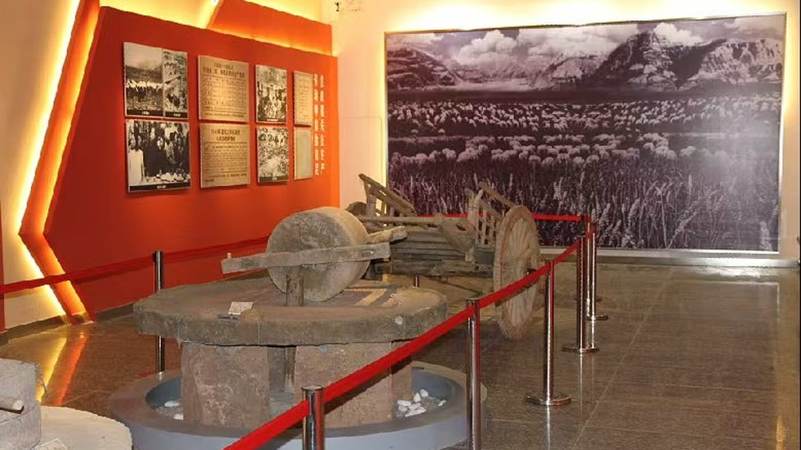

第 4 记 · 一片塬
“自己动手、丰衣足食。”1943 年大凤川生产自救运动的口号
南梁的塬上，镢头和课本是同时存在的。一边开荒，一边办学；一个团在这里种粮，一所军校在这里挖窑洞。
1943 年 4 月，大凤川来了一个团
1943 年春，129 师 385 旅 770 团上千名战士在团长张才千、政委肖元礼带领下进驻大凤川，和当地村民一道开始大生产运动。他们响应党中央、毛主席“发展经济、保障供给”的方针和“自己动手、丰衣足食”的号召，在子午岭林区边缘的荒沟里开荒种地。
大凤川由此变成陇东的“南泥湾”。据记载，当年有人创下日开荒 4.5 亩的最高纪录，全年平均每人开垦荒地 62 亩。
一首歌从这里唱响全国
这首歌的曲调来自华池一带流传的民歌《磨炒面》。1943 年，人民艺术家张寒晖到大凤川一带采风，被军民开荒的场面感染，用“旧瓶装新酒”的办法给《磨炒面》填上新词，写成《边区十唱》。
1964 年，周恩来总理在大型音乐舞蹈史诗《东方红》中选定这首歌，它从此更名为《军民大生产》，唱遍全国。对南梁来说，它不是宣传品，而是生产自救的副产品——先有镢头和荒地，才有歌。
抗大七分校：五千人的窑洞大学
1943 年 1 月，中共中央军委决定把抗大第七分校及所属陆军中学、河北灵寿的抗大第二分校附中开赴陇东，组建新的抗大第七分校，由彭绍辉兼任校长、俞楚杰任副校长。校部驻合水县老城镇，所属陆军中学编为第一大队，驻扎大凤川。
1943 年 12 月底和 1944 年 4 月，晋冀鲁豫军区所属太行、太岳两所陆军中学共 1100 余人先后来到合水，编为第三大队，驻平定川。1944 年 9 月上旬，校部机关和女生队迁到华池县东华池村，女生队驻地对面的半山腰被群众叫作“女生洼”。至此全校师生达 5200 多人，学员最小的 13 岁，最大的不过 20 岁。
他们到东华池时“一无所有”，漫山只有几孔荒废窑洞。学校请当地群众当技术指导，两个多月挖成窑洞 690 孔；副校长俞楚杰带能工巧匠箍石窑 46 孔、盖平房 35 间；没有用一个铁钉、一袋水泥，建起可容纳 2000 余人的木制大礼堂。
1944 年 3 月 29 日，全校开生产动员大会，提出开荒 5 万亩、产粮 5000 石、纺纱 5000 公斤的目标。到 1944 年底，实际开荒 6 万余亩，产粮折合细粮 5650 余石，养猪 1300 余头、羊 1100 余只、牛 100 余头，蔬菜全部自给。
女生队承担纺线、织毛衣、做棉军服：没有染料，就到山上挖核桃、酸枣、杏树根熬成水，把毛线染成咖啡色、黄色、深浅灰。学校还在东华池办起 5 个商店、5 个饭馆和 20 多个作坊，偏僻小镇一时商旅云集。
塬上的经济学
边区政府办商铺、办合作社、组织生产，把军事斗争与经济建设放在一起考虑：师家商铺这样的据点既是市场，也是交通站；大凤川这样的荒地既是农场，也是课堂。
对一所农业院校的读者来说，这段历史最容易被忽略，也最值得细看：根据地不是只靠打仗活下来的。

大凤川
1943 年 4 月，七七〇团 1200 余人进驻
抗大七分校
东华池办学，全校 5200 多人，后发展为陆军边海防学院
《军民大生产》
民歌诞生于大凤川，后唱响全国
商店与作坊
东华池办起 5 个商店、5 个饭馆、20 多个作坊
本页史实清单
- 1943 年春，770 团上千名战士进驻大凤川，团长张才千、政委肖元礼；当年创下日开荒 4.5 亩的纪录
- 《军民大生产》曲调取自华池民歌《磨炒面》，张寒晖采风后填词为《边区十唱》，1964 年《东方红》中更名
- 1943 年 1 月组建新的抗大七分校：彭绍辉兼校长、俞楚杰任副校长，校部驻合水老城镇
- 全校 5200 多人，学员最小 13 岁；挖窑洞 690 孔，箍石窑 46 孔、平房 35 间
- 1944 年开荒 6 万余亩，产粮 5650 余石，养猪 1300 余头
- 抗大七分校后发展为陆军边海防学院
资料来源：华池县人民政府《红色南梁邀您来打卡！》（2023-05-05）；人民政协报《抗大七分校在陇东》（2021-08-19）